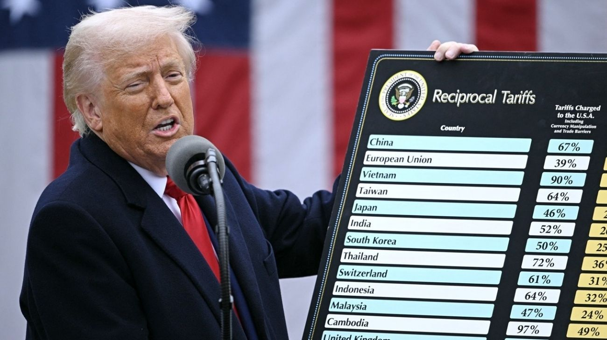

Trump escala la guerra comercial al elevar el arancel global al 15% en menos de 24 horas
El presidente de Estados Unidos sorprende a los mercados internacionales al incrementar cinco puntos la tasa general de importación apenas un día después de fijarla en el 10%.

En un giro inesperado que ha sacudido los cimientos del comercio internacional, el presidente Donald Trump ha anunciado un incremento del arancel global, elevándolo al 15% apenas un día después de haber establecido un suelo del 10%. Esta decisión, comunicada con la celeridad que caracteriza su actual gestión, marca una aceleración agresiva en su política de proteccionismo económico. La medida busca, según fuentes cercanas a la Casa Blanca, fortalecer la posición negociadora de Estados Unidos frente a sus principales socios comerciales y reducir de manera drástica el déficit exterior que el mandatario considera insostenible.
La volatilidad de estos anuncios ha generado una oleada de incertidumbre en los mercados financieros globales, que aún intentaban digerir el impacto de la primera cifra anunciada. Al aumentar la presión en un margen de tan solo veinticuatro horas, la administración estadounidense envía un mensaje de imprevisibilidad estratégica destinado a descolocar a bloques económicos como la Unión Europea y a potencias como China.
Los analistas advierten que este movimiento no solo es una declaración de intenciones económica, sino una herramienta de presión política para obtener concesiones en áreas que van desde la propiedad intelectual hasta la cooperación en materia migratoria.
A nivel interno, la preocupación por el impacto en los precios al consumidor empieza a manifestarse entre diversos sectores industriales que dependen de suministros extranjeros. Un gravamen del 15% sobre todas las importaciones globales supone un desafío logístico y financiero para las empresas, que se ven obligadas a decidir entre absorber los costes adicionales o trasladarlos directamente al ciudadano final.
A pesar de las advertencias sobre un posible repunte inflacionario, el equipo económico del presidente sostiene que estos aranceles incentivarán el retorno de la producción al suelo estadounidense y revitalizarán el sector manufacturero nacional.
La respuesta de la comunidad internacional no se ha hecho esperar, y ya se barajan posibles medidas de reciprocidad que podrían desembocar en una guerra comercial de proporciones inéditas. Bruselas y Pekín han comenzado a evaluar represalias sobre productos estratégicos estadounidenses, lo que amenaza con fragmentar aún más el sistema de comercio multilateral.
Mientras tanto, el gobierno de Estados Unidos mantiene su postura firme, asegurando que la prioridad absoluta es la seguridad económica del país y que están preparados para ajustar las tasas hacia arriba si consideran que los términos de intercambio no benefician a los trabajadores americanos.